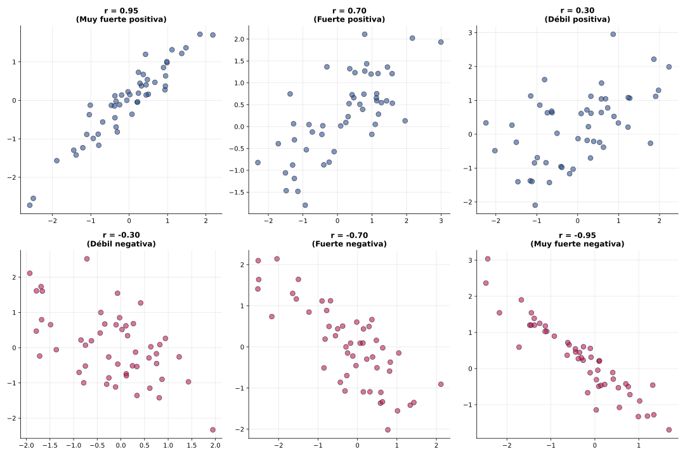

Propiedades fundamentales:

Criterios de interpretación:
| |r| | Interpretación |
|---|---|
| 0.9 - 1.0 | Correlación muy fuerte |
| 0.7 - 0.9 | Correlación fuerte |
| 0.4 - 0.7 | Correlación moderada |
| 0.2 - 0.4 | Correlación débil |
| 0.0 - 0.2 | Correlación muy débil o nula |
Ej 2.1: Dados Sxy = 12, Sx = 3, Sy = 5, calcula r.
Resultado: r = 0.8 → Correlación fuerte positiva
Ej 2.2: Interpretar: r = 0.92, r = -0.15, r = -0.87, r = 0.03
Ej 2.3: Calcular r completo para estos datos de años de experiencia (X) y salario en miles € (Y): (2,22), (5,28), (3,24), (8,35), (6,30), (10,40), (4,26), (7,33)
| x | y | x-\(\bar{x}\) | y-\(\bar{y}\) | (x-\(\bar{x}\))(y-\(\bar{y}\)) |
|---|---|---|---|---|
| 2 | 22 | -3.625 | -7.75 | 28.09 |
| 5 | 28 | -0.625 | -1.75 | 1.09 |
| 3 | 24 | -2.625 | -5.75 | 15.09 |
| 8 | 35 | 2.375 | 5.25 | 12.47 |
| 6 | 30 | 0.375 | 0.25 | 0.09 |
| 10 | 40 | 4.375 | 10.25 | 44.84 |
| 4 | 26 | -1.625 | -3.75 | 6.09 |
| 7 | 33 | 1.375 | 3.25 | 4.47 |
| Suma: | 112.23 | |||
Resultado: r = 0.898 ≈ 0.90 → Correlación muy fuerte positiva entre experiencia y salario
Ej 3.1 (Contexto Vigo): Analizar correlación entre número de turistas mensuales en Vigo y temperatura media (datos de sesión 1).
Usando los datos de temperatura_turistas_cies.csv, se obtiene r = 0.964.
r = 0.964 → Correlación prácticamente perfecta positiva
⚠️ Importante: Aunque r ≈ 1, NO podemos afirmar que "la temperatura causa el turismo" sin más análisis. Existen variables intermedias (vacaciones escolares, promoción turística, etc.)
Correlación ≠ Causalidad: Ejemplos clásicos de correlaciones espurias:
Conclusión: Siempre debemos preguntarnos: ¿Es esta relación plausible causalmente? ¿Existen variables ocultas?